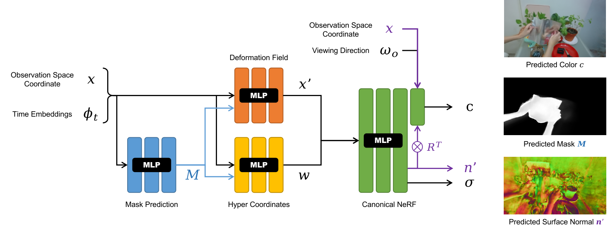

NeRF-DS
Neural Radiance Fields for Dynamic Specular Objects
CVPR 2023
National University of Singapore
Abstract
Dynamic Neural Radiance Field (NeRF) is a powerful algorithm capable of rendering photo-realistic novel view images from a monocular RGB video of a dynamic scene.
Although it warps moving points across frames from the observation spaces to a common canonical space for rendering, dynamic NeRF does not model the change of the reflected color during the warping.
As a result, this approach often fails drastically on challenging specular objects in motion. We address this limitation by reformulating the neural radiance field function to be conditioned on surface position and orientation in the observation space.
This allows the specular surface at different poses to keep the different reflected colors when mapped to the common canonical space. Additionally, we add the mask of moving objects to guide the deformation field.
As the specular surface changes color during motion, the mask mitigates the problem of failure to find temporal correspondences with only RGB supervision.
We evaluate our model based on the novel view synthesis quality with a self-collected dataset of different moving specular objects in realistic environments.
The experimental results demonstrate that our method significantly improves the reconstruction quality of moving specular objects from monocular RGB videos compared to the existing NeRF models.
As shown in the figure above, a surface can reflect different colors after a translation or rotation. However, existing dynamic NeRF models still warp the points to the same canonical position. The point before and after the movement will be forced to render the same color and could cause severe artifact. To address this issue, the rendered color should also be conditioned on the surface position and orientation before the warping.
Our network uses a surface aware NeRF and a mask guided deformation field to produce more accurate reconstruction of dynamic specular objects. The surface aware NeRF renders the point colors conditioned on the surface point position and predicted orientation in the observation space before warping. The mask guided deformation field predict the deformation based on a predicted mask of the dynamic object to better establish point correspondence even if the point colors change drastically.
Due to the lack of dynamic specular objects in existing datasets, we collect a new dataset of moving specular objects in realistic environments. You can download the dataset from here.
Citation
Acknowledgements
This research is supported by the National Research Foundation, Singapore under its AI Singapore Programme (AISG Award No: AISG2-RP-2021-024), and the Tier 2 grant MOE-T2EP20120-0011 from the Singapore Ministry of Education.